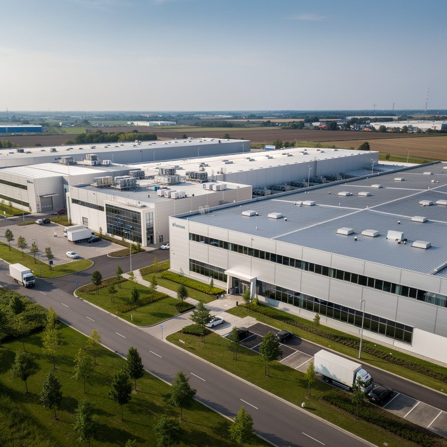

Del archivador físico a una plataforma accesible desde cualquier dispositivo
Llevamos tu sistema de gestión de inocuidad del archivador físico a una plataforma digital accesible desde cualquier dispositivo, en cualquier momento. El objetivo: que una auditoría no signifique horas buscando registros en papel.
Diseñamos e implementamos la arquitectura digital de tu sistema de calidad: desde los formatos hasta el flujo de aprobación de documentos, las alertas de vencimiento y los dashboards de cumplimiento en tiempo real.
El resultado es un sistema que tu equipo usa con naturalidad, que reduce errores de registro, que facilita la trazabilidad de cada lote y que convierte cada auditoría en una demostración de control, no en un ejercicio de búsqueda documental.
¿Cómo lo hacemos?
Nuestro proceso de transformación digital se adapta a la realidad de cada empresa, desde startups hasta plantas con décadas de operación.
Auditoría documental
Relevamos toda la documentación y registros existentes. Identificamos qué está en papel, qué ya es digital y qué falta por crear o mejorar.
Diseño del sistema digital
Diseñamos la arquitectura de carpetas, permisos, flujos de aprobación y formatos digitales adaptados a tu proceso y equipo.
Migración e implementación
Trasladamos todos los documentos al nuevo sistema, configuramos las plataformas (Google Workspace, Microsoft 365 u otras) y activamos los flujos.
Capacitación del equipo
Formamos a todo el personal involucrado en el uso del nuevo sistema hasta que lo dominen con naturalidad y autonomía.
Todo lo que recibes
Formatos y registros digitales
Todos los formatos BPM, HACCP, PGH y control de calidad en versión digital, con validación, firma electrónica y versionado.
Dashboard de cumplimiento
Panel en tiempo real que muestra el estado de cada requisito del sistema de gestión: pendientes, al día, vencidos.
Alertas de vencimiento
Notificaciones automáticas para análisis, certificaciones y documentos próximos a vencer. Sin sorpresas en las auditorías.
Integración de plataformas
Implementación en Google Workspace, Microsoft 365, SharePoint u otras plataformas cloud según las preferencias de tu empresa.
Hablemos de tu operación
Te hacemos un diagnóstico inicial sin costo y te decimos exactamente cómo aplicar este servicio en tu empresa.
Agenda tu diagnóstico gratuito →